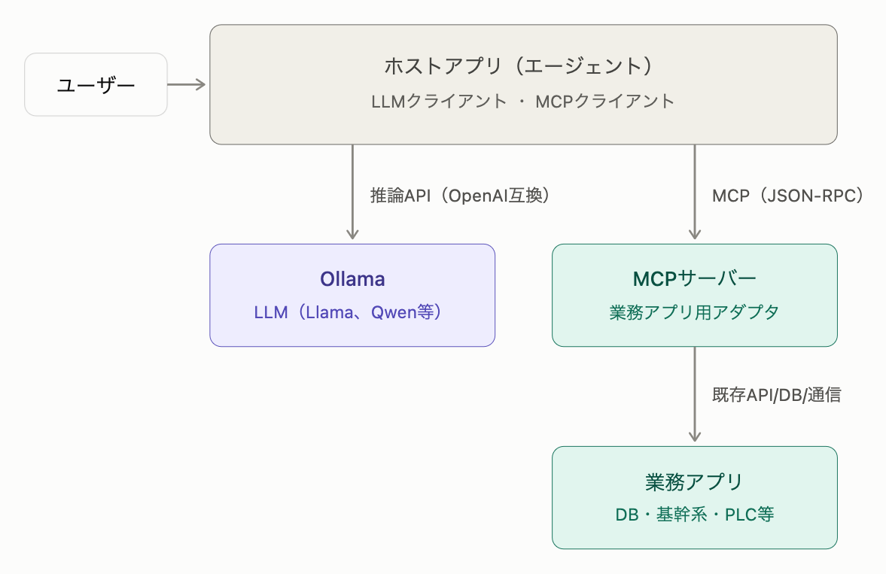
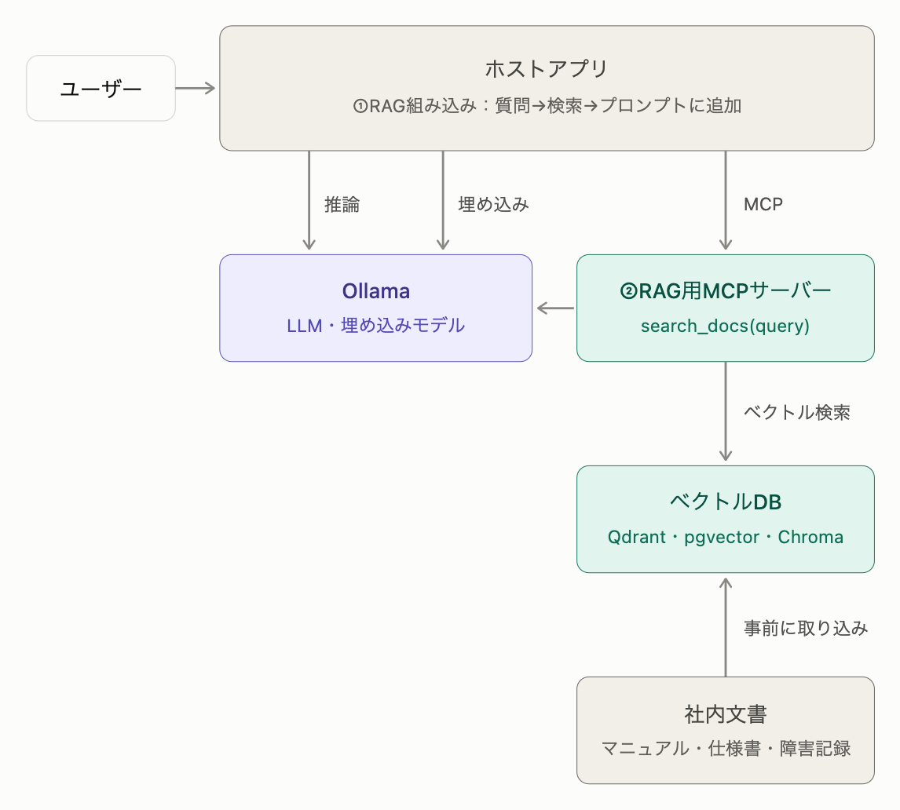

📙 概要1. Ollama+MCP+RAGで構成する¶
2026/11/27公開 2026/11/27更新
質問者: Shigeru Morifuku
回答者: Claude Opus 5.5
回答日: 2026/11/19
免責: 回答者は AI であり、間違えることがあります。
🟩 Q: Ollamaはオープン系LLMの付け外し装置？¶
だいたい合っています。もう少し正確に言うと、ローカルでLLMを動かすためのランタイム＋モデル管理ツールです。Dockerに近いイメージで、「モデルを取ってくる・しまっておく・必要なときにメモリに載せて推論サーバーとして提供する」までを一つでやってくれます。
やっていること
モデルの取得と管理：
ollama pull llama3のようにレジストリから量子化済みモデル（GGUF形式）を落としてきて、手元に保管します。ollama listで一覧、ollama rmで削除です。推論エンジン：中身は元々 llama.cpp（C/C++製）で、CPU・GPU（CUDA、ROCm、Metal）を自動で判別し、VRAMに入るぶんだけレイヤーをGPUに載せます。最近は独自エンジンも併用しています。
ロードとアンロード：「付け外し」に当たる部分です。リクエストが来たら自動でモデルをメモリに載せ、一定時間（
keep_alive、デフォルトは5分程度）使われなければ降ろします。メモリが許せば複数のモデルを同時に載せておくこともできます。APIサーバー：
localhost:11434でREST APIを提供します。OpenAI互換のエンドポイントもあるので、OpenAI向けのクライアントやツールの接続先を書き換えるだけで使えます。Modelfile：Dockerfileのようなもので、ベースモデル、システムプロンプト、温度やコンテキスト長などのパラメータをまとめて、自分用のモデルとして定義できます。
ほかのツールとの位置づけ
llama.cpp：Ollamaの土台です。直接使えば細かく制御できますが、モデル管理は自分でやることになります。
Ollama：llama.cppを包んで扱いやすくしたものです。個人や開発環境で手軽に使うのに向いています。
vLLM、TGIなど：GPUサーバーで高スループット・多数同時接続をさばく本番向けです。
つまり「オープンなLLMを差し替えながら手元で動かすための、パッケージマネージャー兼推論サーバー」と考えるのがいちばん近いです。C/C++から使うなら、HTTPでAPIを叩くか、llama.cppをライブラリとして直接リンクするかのどちらかになります。
🟩 Q: MCPはLLMのDNS?¶
DNSとは少し違います。DNSは「名前を引いて住所を返す」仕組みですが、MCP（Model Context Protocol）はLLMアプリと外部のツールやデータをつなぐための共通の接続規格です。たとえるならUSBやLSPのほうが近いです。
たとえで言うと
USB：機器ごとに専用ケーブルを作らず、一つの規格に合わせれば何でもつながります。MCPも同じで、ツールの提供側がMCPサーバーを一つ作れば、Claude、IDE、自作のエージェントなどMCPに対応したどのアプリからでも使えます。
LSP（Language Server Protocol）：エディタと言語サーバーの組み合わせ「エディタ数×言語数」の問題を「エディタ数＋言語数」にした規格です。MCPは同じことを「LLMアプリ×外部ツール」の組み合わせでやっています。設計も実際にLSPを参考にしています。
中身
構成：ホスト（Claude Desktopなどのアプリ）の中にクライアントがあり、MCPサーバーとは1対1で接続します。
プロトコル：JSON-RPC 2.0です。
トランスポート：ローカルなら子プロセスを起動してstdioで通信し、リモートならHTTP（Streamable HTTP）で通信します。
サーバーが提供するもの：
Tools：LLMが呼び出せる関数（DB検索、ファイル操作、API呼び出しなど）
Resources：読み取り用のデータ（ファイルの内容、ドキュメントなど）
Prompts：定型のプロンプトテンプレート
流れ：接続時に「どんなツールがあるか」を問い合わせて一覧（名前、説明、引数のJSONスキーマ）を受け取ります。LLMがそれを見て「このツールをこの引数で呼ぶ」と判断し、クライアントが実行して結果をLLMに返します。
DNSっぽい部分もあるにはある
「どこにどんなMCPサーバーがあるか」を探すためのレジストリ（ディレクトリ）は別にあり、その部分は名前解決に少し似ています。ただし、それはMCP本体の周辺にある仕組みです。本体はあくまで、つないだ後にどう会話するかの規約です。
まとめると、MCPは「LLMの外付け機能をつなぐための共通の差し込み口」です。DNSでいう「探す」役割より、「つないで使う」役割のほうが本質です。
🟩 Q: ホストアプリ、MCP、Ollama、LLMの関係¶
ポイントは、MCPとOllamaは直接つながらないことです。間に「ホストアプリ（エージェント）」が入り、それが両方を仲介します。

紫がLLMの側（Ollama）、緑が業務アプリの側（MCPサーバーと業務アプリ）です。間に入るホストアプリはグレーにしました。
それぞれの役割
LLM：考えて判断する役です。自分では何も実行せず、「このツールをこの引数で呼びたい」というテキスト（tool call）を出すだけです。
Ollama：LLMを動かす土台です。モデルをメモリに載せ、推論APIとして提供します。クラウドのClaudeやGPTを使う場合は、この部分がクラウドAPIに置き換わります。
MCPサーバー：業務アプリに付ける「LLM向けの差し込み口」です。業務アプリの機能を、名前・説明・引数スキーマ付きのツールとして公開します。業務アプリ本体には手を入れず、外付けのアダプタとして作るのが普通です。
業務アプリ：実際にデータや処理を持っている本体です。MCPのことは何も知らなくてかまいません。
ホストアプリ：全体のまとめ役です。MCPサーバーからツール一覧を取ってきてLLMに渡し、LLMがツールを呼びたいと言ったら代わりに実行して、結果をLLMに返します。Claude Desktop、IDE、Open WebUIのようなもの、あるいは自作のプログラムがこれに当たります。
1回の問い合わせの流れ
例として「昨日のライン3の異常停止件数は？」と聞いた場合です。
ホストアプリがMCPサーバーからツール一覧（例：
get_alarm_history(line, date)）を取得します。質問とツール一覧をOllama経由でLLMに渡します。
LLMは「
get_alarm_history(line=3, date=昨日)を呼ぶ」と返します。ホストアプリがそれをMCPサーバーに送り、MCPサーバーが業務アプリやDBを実際に叩きます。
結果をLLMに戻すと、LLMが「昨日は5件で、主な原因は…」と文章にまとめて答えます。
押さえどころ
入れ替えが利く：OllamaをクラウドのLLMに替えても、MCPサーバーはそのまま使えます。逆に、ホストアプリを替えても業務アプリ側のMCPサーバーは作り直す必要がありません。
全部社内で閉じられる：Ollamaでローカルにモデルを動かせば、データを外に出さずに構成できます。業務用途ではこれがOllamaを選ぶ大きな理由です。
モデル選びに注意：Ollamaで使うモデルは、tool callingに対応したもの（Qwen系、Llama 3.1以降など）を選ぶ必要があります。小さいモデルほど、ツールの選び方や引数の作り方を間違えやすくなります。
安全対策はMCPサーバー側で：LLMは何を呼ぶか間違えることがあります。書き込み系の操作（設定変更やPLCへの書き込みなど）は、MCPサーバー側で権限を絞るか、人間の確認を挟む設計にするのが無難です。
🟩 Q: RAGはどこに接続される？¶
RAGは「新しい部品」というより、検索の仕組み一式です。置き場所は大きく2通りあり、前回の図でいうと「ホストアプリの中」か「MCPサーバーの一つ」のどちらかになります。

紫がLLMの側、緑が検索の側です。MCPサーバーからOllamaへ向かう横の矢印は、②の構成でMCPサーバーが検索語を埋め込みベクトルに変えるときの呼び出しです。①の構成では、ホストアプリからOllamaへ向かう「埋め込み」の矢印がこの役割を担います。
RAGを構成する部品
取り込み（事前処理）：文書を数百〜千文字程度に分割し、埋め込みモデルでベクトルにしてベクトルDBに入れておきます。
埋め込みモデル：文章をベクトルに変換します。Ollamaは埋め込みモデル（
nomic-embed-text、bge-m3など）も動かせるので、チャット用LLMと同じOllamaでまかなえます。日本語の文書ならbge-m3のような多言語対応のモデルが無難です。ベクトルDB：意味の近い文書片を探す検索エンジンです。
LLM：検索で見つかった文書片を読んで回答を作ります。
① ホストアプリに組み込む場合（従来型RAG）
流れは、質問が来たら必ず先に検索し、上位数件をプロンプトに足してからLLMに渡す、です。
LLMは検索したかどうかを意識しません。
仕組みが単純で、小さいモデルでも安定して動きます。
その代わり、検索が要らない質問でも毎回検索が走ります。
② MCPサーバーにする場合（エージェント型RAG）
検索を
search_docs(query)というツールとして公開し、検索するかどうか、何という語で検索するかはLLMに判断させます。「マニュアルを検索して、さらに業務DBで実績を確認する」のように、他のツールと組み合わせられます。
検索の仕組みをホストアプリから切り離せるので、別のアプリからも同じ文書検索を使い回せます。
その代わり、LLMにツールを適切に使う能力が必要です。小さいモデルだと検索し忘れたり、検索語が下手だったりします。
使い分けの目安
「社内マニュアルに答えるQ&Aボット」のように用途が決まっているなら①が簡単で確実です。
業務アプリの操作や、DBの照会と組み合わせたエージェントを作るなら②が筋です。前回の構成なら、MCPサーバーを「業務アプリ用」と「文書検索用」に並べる形になります。
まとめると、RAGは**業務アプリと同じく「LLMの外側にある知識源」**です。MCPはそこへの接続方法の一つ、Ollamaはそこで使う埋め込みモデルとLLMの実行役、という関係です。